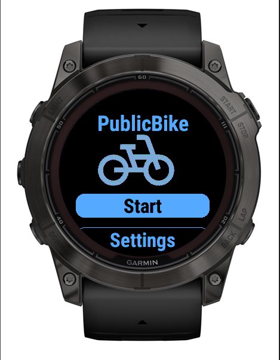

Nasza aplikacja oferuje szereg funkcji, które sprawią, że Twoje doświadczenie z wypożyczaniem rowerów będzie bezproblemowe:
- Znajdź najbliższe stacje rowerowe i sprawdź, ile rowerów jest dostępnych na każdej stacji.
- Dostępna na urządzeniach Garmin, aby mieć łatwy dostęp w drodze.
- Zobacz szczegółową listę dostępnych rowerów na każdej stacji.
- Nawiguj bezpośrednio do wybranej stacji za pomocą naszej aplikacji.
- Podglądaj lokalizacje na Google Maps dla lepszego przeglądu.
- Filtruj rowery po typie, aby łatwiej znaleźć idealny rower dla siebie.
Wypróbuj za darmo! Oferujemy wersję próbną, która pozwala na testowanie aplikacji.
Zrzuty ekranu
| Ekran główny | Lista miejsc | Lista rowerów |
|---|---|---|
|  |  |
| Mapa | Widok miejsca |
|---|---|
 |
 |
Staramy się zapewnić najbardziej wygodną i efektywną usługę wypożyczania rowerów. Wypróbuj naszą aplikację już dziś!